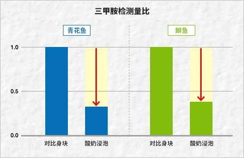

|
首页 ＞ 科学验证！酸奶与料理的神奇关系 ＞ 酸奶×鱼
酸奶×鱼验证通过酸奶去除鱼腥味的效果如实。
原因：腥味的主要成分是“三甲胺”鱼腥味的主要成分是一种被称为“三甲胺”的碱性化学成分。当其浓度变高时会产生像氨气一样的臭味，也是恶臭防止法的限制对象。可以认为这种腥味是鱼肉的成分被分解后所产生的，也是新鲜度评估的大致标准。 实验开始：将青花鱼和鰤鱼浸在酸奶中加热准备的实验品有四个。
都各自放入塑料袋，在4℃的冰箱里放置一个晚上。 分析：将实验品均匀化后，比较三甲胺的份量从烤好的实验品中去除鱼皮和烧焦部分，用保鲜膜包好后再用棍子将鱼肉敲打松散。这样均匀化后，各取0.5g，比较三甲胺的份量。  ※株式会社明治 调查
结论：放酸奶里浸泡可减少鱼的腥味成分通过放入酸奶浸泡，可以发现鱼腥味的指标三甲胺的减少。由于三甲胺呈碱性，可以认为是由于吸附在酸性的酸奶中而致其减少。也就是说把鱼放入酸奶里浸泡的话，腥味就会消失，更容易入口吃。不喜欢吃鱼的人，可以先泡在酸奶里再行烹调。 |